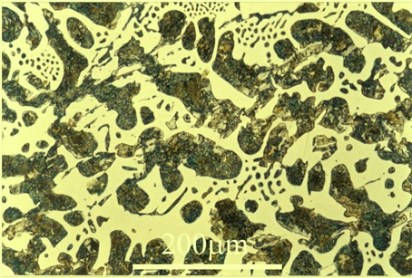
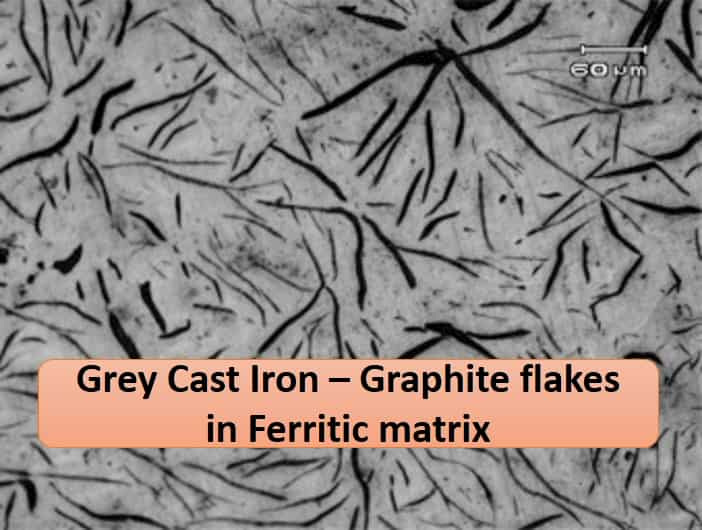
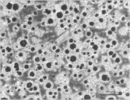
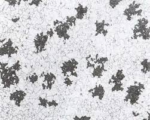
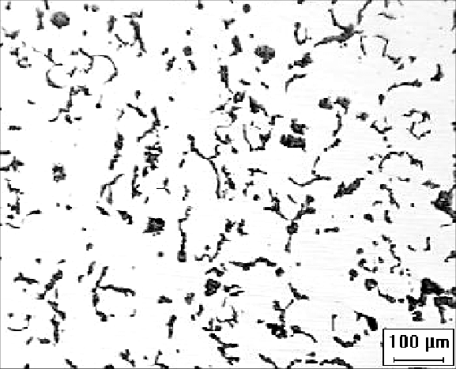

Microstructural analysis of cast-iron specimens
Theory
- Cast iron is made when pig iron is remelted in small cupola furnaces (similar to the blast furnace in design and
operation) and poured into molds to make castings. Cast Iron is generally defined as an alloy of Iron with greater than
2% Carbon, and usually with more than 0.1% Silicon.
- The term cast iron, like the term steel, identifies a large family of ferrous alloys. Cast irons are multi component
ferrous alloys. They contain major (iron, carbon, silicon), minor (<0.01%), and often alloying (>0.01%) elements. Cast
iron has higher carbon and silicon contents than steel. Because of the higher carbon content, the structure of cast
iron, as opposed to that of steel, exhibits a rich carbon phase.
Types of Cast Iron:
- On the basis of Microstructure cast irons are classified as follows.
-
-
White Cast Iron
- Composition of the iron is appropriate or the cooling rate of the metal is sufficiently rapid during solidification, the
metal will solidify with the C combined with iron as iron carbide. This compound, also called cementite, is hard and
brittle and dominates the microstructure of white iron. Thus, white iron is hard and brittle and has a white crystalline
fracture because it is essentially free of graphite. White iron has a high compressive strength and excellent wear
resistance, and it retains its hardness for limited periods even up to a red heat
White iron does not have the easy castabiiity of other irons because its solidification temperature is generally higher,
and it solidifies with C in its combined form as iron carbide. Application includes rollers of rolling mills, Dies of
metal extrusion and where high wear resistance is necessary.

-
Gray Cast Iron
- Gray Cast Irons contain silicon, in addition to carbon, as a primary alloy. Amounts of manganese are also added to yield
the desired microstructure. Generally the graphite exists in the form of flakes, which are surrounded by an aferrite or
Pearlite matrix. Most Gray Irons are hypoeutectic, meaning they have carbon equivalence (C.E.) of less than 4.3. Gray
cast irons are comparatively weak and brittle in tension due to its microstructure; the graphite flakes have tips which
serve as points of stress concentration. Strength and ductility are much higher under compression loads.
The properties of gray iron are influenced by the size, amount and distribution of the graphite flakes, and by the
relative hardness of the matrix metal around the graphite. These factors are controlled mainly by the C and Si contents
of the metal and the cooling rate of the casting.

-
Ductile Cast Iron
- Ductile iron also referred to as nodular iron or spheroidal graphite iron, was patented in 1948.
An unusual combination of properties is obtained in ductile iron because the graphite occurs as spheroids rather than as
individual flakes as in gray iron. This mode of solidification is obtained by adding a very small, but specific, amount
of Mg to molten iron of a proper composition. The base iron is severely restricted in the allowable contents of certain
minor elements that can interfere with the graphite spheroid formation. The added Mg reacts with the sulfur and oxygen
in the molten iron and changes the way the graphite is formed
Ductile iron, like malleable iron, exhibits a linear stress-strain relation, a considerable range of yield strengths
and, as its name implies, ductility. Castings are made in a wide range of sizes with sections that can be either very
thin or very thick.

-
Malleable Cast Iron
- This type of iron is characterized by having the majority of its C content occur in the microstructure as irregularly
shaped nodules of graphite. This form of graphite is called temper carbon because it is formed in the solid state during
heat treatment. The iron is cast as a white iron of a suitable chemical composition. After the castings are removed from
the mold, they are given an extended heat treatment starting at a temperature above 1650°F (900°C). This causes the iron
carbide to dissociate and the free carbon precipitates in the solid iron as graphite. The rapid 22 solidification rate
that is necessary to form the white iron limits the metal thickness in the casting that is practical for the malleable
iron process.
Malleable irons containing some combined carbon in the matrix often are referred to as pearlitic malleable, although the
microstructure may be martensitic or a spheroidized pearlite.

-
Compacted Graphite Iron
- Iron-carbon cast material with the carbon proportion being present as graphite, predominantly in vermicular (compacted)
form. This structural appearance in the micrograph makes for the name Compacted graphite iron Compacted graphite iron
(CGI) can be considered as a promising engineering material which contains graphite particles in compacted (vermicular)
form. CGI shows intermediate mechanical and physical properties between grey and ductile irons. For instance, it
possesses 70% higher tensile strength, 35% higher elastic modulus and nearly double fatigue strength of grey cast irons.
Thus it includes an optimal combination of different properties like strength, ductility and thermal conductivity which
have lead to a distinctive attention during recent years. Because of these properties, CGI found a significant role in
production of automotive engines, machine parts and also many different applications. Nowadays, several methods of
casting of CGI products have been developed, trying to find the best method to have a precise control on the final
microstructure.
